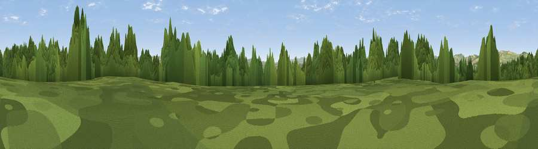

Sprydon Beacon
#29967 in England · top 61% of its area beats it · near BroadclystThe view, rendered

A 360° render of this exact spot computed from the terrain model, tree cover and land cover — summer colours, afternoon light, calibrated against photographs of famous viewpoints. Real trees, hedges and buildings will differ in detail.
The panorama
Grey silhouette: terrain skyline in each direction (720 bearings, Earth curvature and refraction included). Dashed green: skyline with trees (+15 m) and buildings (+8 m) as obstacles. Blue strip: how far the ground is visible on each bearing.
Where the view opens
Wedge length = distance to the farthest visible ground on that bearing (vegetation-aware). Rings at 10, 25 and 50 km.
What fills the view
47% grassland · 31% woodland · 19% cropland · 3% built-up
Angular shares of the visible panorama (visual magnitude), not map area. Landscape diversity 0.50 (0–1 Shannon).
Key numbers
More beautiful places nearby
The staircase of upgrades: each row has a higher view potential than everything closer. Driving times are estimates from straight-line distance, calibrated against real road routing — check an actual route before setting out.
| Place | Direction | Drive | Score |
|---|---|---|---|
| Viewpoint near Clyst St. Lawrence | NNE · 2 km | ~6 min | 56.0 |
| Viewpoint near Clyst Hydon | NE · 3 km | ~8 min | 59.3 |
| Viewpoint near Bradninch | N · 5 km | ~11 min | 72.5 |
| Viewpoint near Bradninch | NNW · 5 km | ~12 min | 77.7 |
| Raddon Hills | WNW · 10 km | ~20 min | 78.2 |
| Viewpoint near Stockleigh Pomeroy | WNW · 11 km | ~21 min | 78.9 |
| Viewpoint near Whitestone | WSW · 14 km | ~25 min | 79.8 |
| Viewpoint near Tipton St John | SE · 14 km | ~25 min | 81.5 |
50.78525, -3.42384 · source: osm peak · position refined by local search. Computed location — check access rights before visiting.